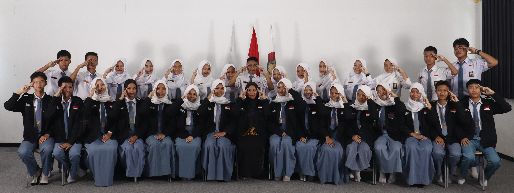

Organisasi yang Menggerakkan Sekolah

"Dengan semangat kebersamaan, kami hadir untuk mewakili, menggerakkan, dan menginspirasi seluruh sivitas SMKN 1 Banyumas."
OSIS SMKN 1 Banyumas adalah wadah resmi bagi siswa-siswi untuk mengembangkan potensi kepemimpinan, kreativitas, dan tanggung jawab sosial. Didukung oleh MPK sebagai badan pengawas, organisasi ini menjalankan berbagai program unggulan sepanjang tahun ajaran.
Kami berkomitmen untuk menciptakan lingkungan sekolah yang kondusif, inovatif, dan menyenangkan melalui berbagai kegiatan akademik maupun non-akademik yang melibatkan seluruh elemen sekolah.
MPK (Majelis Perwakilan Kelas) hadir sebagai badan legislatif yang bertugas menyerap aspirasi siswa dari tiap kelas, mengawasi jalannya program OSIS, serta memastikan kebijakan organisasi berpihak pada kepentingan seluruh siswa.
Visi

Menjadi organisasi siswa yang progresif, inovatif, dan berintegritas dalam mewujudkan sekolah yang unggul, berkarakter, dan berprestasi di tingkat nasional.
Misi
Mewujudkan siswa yang berprestasi, berkarakter, dan peduli lingkungan melalui program-program inovatif dan kolaboratif yang melibatkan seluruh sivitas sekolah.

Peran MPK
Majelis Perwakilan Kelas bertugas mengawasi, mengevaluasi, dan memberikan rekomendasi terhadap kebijakan dan program kerja OSIS demi kepentingan seluruh siswa SMKN 1 Banyumas.
Landasan yang Kami Pegang
Integritas
Bertindak jujur, transparan, dan bertanggung jawab dalam setiap keputusan organisasi.
Kolaborasi
Membangun sinergi antar siswa, guru, dan seluruh elemen sekolah untuk mencapai tujuan bersama.
Inovasi
Terus berpikir kreatif dan adaptif dalam merancang program yang relevan dan berdampak.
Kepedulian
Menjaga rasa empati terhadap sesama siswa dan masyarakat sekitar sebagai wujud tanggung jawab sosial.
Perjalanan Organisasi
OSIS SMKN 1 Banyumas resmi dibentuk bersamaan dengan berdirinya sekolah. Program perdana difokuskan pada pengenalan lingkungan dan budaya sekolah.
Dibentuknya MPK sebagai badan perwakilan kelas untuk memperkuat sistem organisasi dan menjamin aspirasi seluruh siswa tersalurkan dengan baik.
OSIS berhasil menyelenggarakan Pentas Seni perdana yang melibatkan lebih dari 400 peserta dan menjadi agenda tahunan sekolah.
Meraih predikat OSIS Terbaik Tingkat Kabupaten Banyumas dalam ajang Lomba Tertib Organisasi yang diselenggarakan oleh Dinas Pendidikan.
Periode kepengurusan saat ini dengan 12+ program kerja unggulan dan 38 anggota aktif yang siap membawa SMKN 1 Banyumas ke level berikutnya.